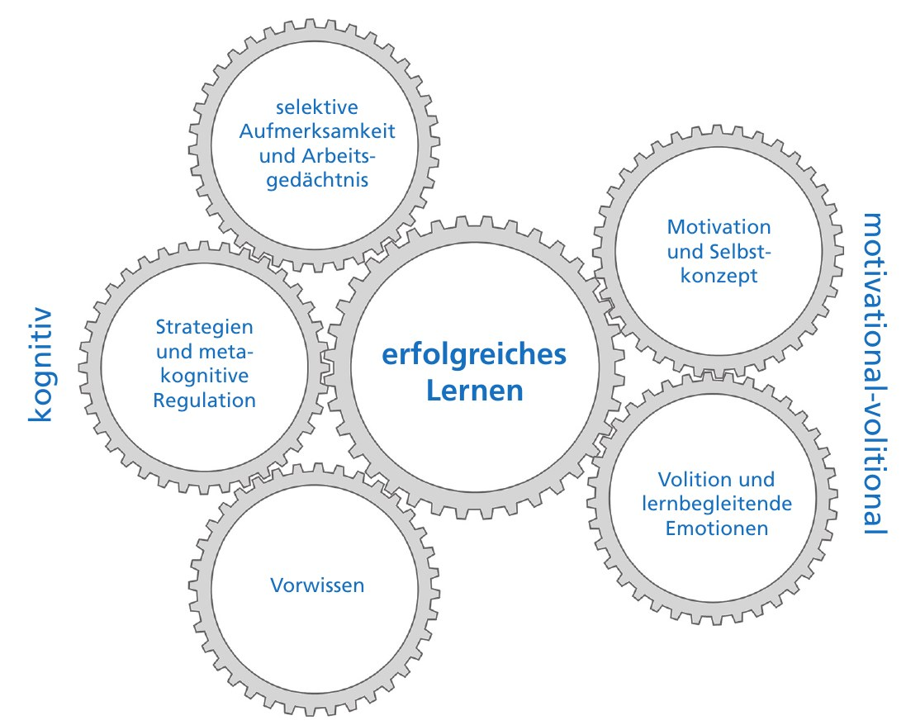

Was bringen Lernende mit, wie nehme ich das wahr, und was folgt daraus für den Unterricht? Theorien, Konzepte, Spannungsfelder und Handlungsmöglichkeiten.
Worum es geht
Lernende bringen Vorwissen, Strategien, Motivation, Gefühle, Entwicklungsthemen und Beziehungserfahrungen mit. Ob daraus Schwierigkeiten werden, hängt davon ab, wie gut Unterricht und Voraussetzungen zueinander passen.
Diese Seite klärt zuerst, was Lernvoraussetzungen sind, stellt dann zentrale Bereiche vor (vom INVO-Modell über Lernschwierigkeiten bis zur Gruppe), zeigt, wie die eigene Wahrnehmung das Bild verzerren kann, und führt zur Bedingungsanalyse, zur Binnendifferenzierung und zu einem Planungs-Check. Du kannst sie von oben nach unten durcharbeiten oder über das Inhaltsverzeichnis springen.
«Die Klasse ist schwach.» «Er ist halt faul.» «Sie kann einfach nicht stillsitzen.»
Solche Sätze fallen schnell. Sie klingen wie Beschreibungen von Lernvoraussetzungen, sind aber oft schon Deutungen und Urteile. Diese Seite fragt: Was bringen Lernende tatsächlich mit, wie erfasse ich das möglichst unverzerrt, und was folgt daraus für meinen Unterricht?
Gedankengang · drei Fragen vor jeder Planung
1
Was bringen die Lernenden mit? Vorwissen, Strategien, Motivation, Gefühle, Entwicklung, Beziehungserfahrungen. → INVO-Modell
2
Woher weiss ich das, und wo könnte ich mich täuschen?→ Wahrnehmung
3
Was folgt daraus für Ziele, Inhalte, Methoden und Unterstützung?→ Bedingungsanalyse
Leitgedanke
Lernvoraussetzungen sind keine festen Eigenschaften von Lernenden. Sie zeigen sich im Zusammenspiel von Person, Aufgabe, Gruppe und Umfeld. Wer sie berücksichtigen will, muss sie sorgfältig erfassen, die eigene Wahrnehmung prüfen und den Unterricht passend gestalten.
So liest du diese Seite
A Was sind Lernvoraussetzungen? · B Was muss ich verstehen? · C Wie nehme ich wahr? · D Wie gehe ich vor? · E Wo wird es schwierig? Über das Inhaltsverzeichnis kannst du jederzeit springen. Zur Begleitung im Unterricht selbst gibt es eine eigene Seite: Lernprozesse individuell begleiten.
TheorieGedankengangSpannungsfeldPraxis
Alle Aussagen stützen sich auf die im Literaturverzeichnis genannten Quellen. Hinweise mit «eigene Synthese» verbinden mehrere Quellen. Die Originalabbildung des INVO-Modells ist als Bildzitat gekennzeichnet und wird im Text besprochen; alle anderen Grafiken sind eigene Darstellungen, die ich mit Hilfe von Claude.ai oder ChatGPT erstellt habe.
Überblick
Wie die Konzepte zusammenhängen
Lernvoraussetzungen liegen in der Person, entstehen aber erst in der Begegnung mit Aufgabe, Lehrperson und Gruppe sichtbar. Die Landkarte zeigt die drei Blickrichtungen dieser Seite. Klicke auf ein Konzept, um dorthin zu springen.
Eigene Darstellung.
AWas sind Lernvoraussetzungen?Lernen baut auf Vorhandenem auf und gelingt, wenn es passt
A · Grundverständnis
Lernen baut immer auf Vorhandenem auf
Nach dem konstruktivistischen Lernverständnis bauen Lernende Wissens- und Könnensstrukturen aktiv auf. Das geschieht nie voraussetzungsfrei: Bestehende Strukturen werden angepasst, erweitert und umgebaut (PH Luzern, 2022, S. 6).
Was man sieht und was man nicht sieht
Eigene Darstellung nach PH Luzern, 2022, Abb. 1, S. 5 (nach Reusser, 2009).
Oberflächen- und Tiefenstruktur
Lernprozesse spielen sich in den Köpfen der Lernenden ab. Welche Handlungen der Lehrperson zu welchen Lernprozessen führen, lässt sich nur indirekt erschliessen und braucht sorgfältige Interpretation.PH Luzern, 2022, S. 5 (nach Reusser, 2009)
Gedankengang
Die meisten Lernvoraussetzungen gehören zur Tiefenstruktur. Was wir sehen (jemand schaut aus dem Fenster, gibt leere Blätter ab), ist nur ein Hinweis. Daraus folgt eine Grundhaltung für die ganze Seite: Beobachtungen sind Hypothesen, keine Diagnosen.
Drei Grundbedürfnisse
Für längerfristige Motivation sind das Erleben von Kompetenz («Ich kann …»), Autonomie («Ich kann mitsteuern») und sozialer Eingebundenheit («Ich gehöre dazu») grundlegend.PH Luzern, 2022, S. 6–7
A · Ein Modell
Das INVO-Modell: fünf Bereiche individueller Voraussetzungen
Hasselhorn & Gold (2022) fassen die wichtigsten individuellen Voraussetzungen erfolgreichen Lernens im INVO-Modell zusammen. Es baut auf dem Modell der «guten Informationsverarbeitung» von Pressley, Borkowski & Schneider (1989) auf und ergänzt es um Volition und Emotionen.

Bildzitat · Hasselhorn & Gold (2022), Abb. 2.1: Modell der individuellen Voraussetzungen erfolgreichen Lernens (INVO-Modell), S. 68.
Die fünf Zahnräder
kognitiv
selektive Aufmerksamkeit und Arbeitsgedächtnis
Vorwissen
Strategien und metakognitive Regulation
motivational-volitional
Motivation und Selbstkonzept
Volition und lernbegleitende Emotionen
Hasselhorn & Gold, 2022, S. 67–68
Warum Zahnräder?
Die Autoren wählen die Darstellung bewusst: Die Zahnräder sind verbunden, kommen aber so nicht zum Laufen. Sie zeigen damit, dass man trotz vieler Detailkenntnisse noch nicht genau weiss, wie die Voraussetzungen zusammenwirken müssen (S. 67–68). Das Modell ist also eine Landkarte, kein Rezept.
Praxis
Das Modell eignet sich als Beobachtungsraster: Wenn das Lernen stockt, an welchem Zahnrad könnte es liegen? Fehlt Vorwissen, eine Strategie, Zuversicht oder ist die Person gerade emotional blockiert?
Unterschiede zwischen und in Personen
Lernende unterscheiden sich voneinander (interindividuelle Differenzen), und dieselbe Person lernt nicht in jeder Situation gleich erfolgreich (intraindividuelle Variabilität). Die Voraussetzungen verändern sich zudem mit der Entwicklung.Hasselhorn & Gold, 2022, S. 66–68
A · Passung
Passung statt Defizit
Ob Lernvoraussetzungen zum Problem werden, hängt davon ab, wie gut Anforderung und Voraussetzung zueinander passen. Diese Idee verbindet mehrere Quellen.
Eigene Darstellung.
Wygotski: die ZPE
Die Zone der proximalen Entwicklung liegt zwischen dem, was ein Kind selbstständig lösen kann, und dem, was es mit Unterstützung von Erwachsenen oder fähigeren Peers erreichen kann. Höhere geistige Prozesse entstehen zuerst in gemeinsamen Tätigkeiten und werden dann verinnerlicht.Woolfolk, 2014, Kap. 2.4
Lernschwierigkeiten als Passungsproblem
Lernschwierigkeiten entstehen an der Schwelle zwischen vorhandenen und noch zu erwerbenden Fähigkeiten, wenn die Anforderungen in einem Missverhältnis zu den individuellen Voraussetzungen stehen. Sie sind das Ergebnis einer Interaktion von Person und Umwelt.Hagmann-von Arx et al., 2025, S. 3 (nach Heimlich, 2022; Gold, 2018)
Person und Umwelt
Auch der Diagnostik-Förder-Kreislauf versteht Lern- und Verhaltensschwierigkeiten als Passungsproblematik zwischen individuellen Voraussetzungen, Aktivität und Partizipation sowie Umweltfaktoren wie der Unterrichtsqualität.Tönnissen et al., 2024, S. 305
Gedankengang · Was folgt daraus?
Wer Lernvoraussetzungen berücksichtigt, schaut in beide Waagschalen: Was bringt die Person mit, und was verlangt mein Unterricht? Oft lässt sich die Passung leichter über die Anforderungsseite (Aufgabe, Zugang, Zeit, Hilfe) verbessern als über die Person.
Schwierigkeiten des Lernens entstehen in allen Lernprozessen für alle Lernenden.Heimlich (2022, S. 30), zitiert in Hagmann-von Arx et al., 2025, S. 2
BWas muss ich verstehen?Bereiche von Lernvoraussetzungen, von Vorwissen bis zur Gruppe
B · Vorwissen
Vorwissen: der wichtigste Anknüpfungspunkt
Was Vorwissen leistet
Vorwissen fördert die Qualität der Informationsverarbeitung:
1
Es hilft zu entscheiden, was relevant ist, und lenkt so die selektive Aufmerksamkeit.
2
Es entlastet das Arbeitsgedächtnis, weil Konzepte schneller aktiviert werden.
3
Es erleichtert die Nutzung von Lernstrategien und ihre metakognitive Regulation.
Hasselhorn & Gold, 2022, S. 87–88
Gedankengang
Das Arbeitsgedächtnis ist ein «Flaschenhals». Ein umfangreiches, gut vernetztes Vorwissen kann ihn weiten (S. 125). Darum lohnt sich Zeit für das Aktivieren und Erheben von Vorwissen fast immer, besonders bei Lernenden, die schnell überfordert wirken.
Fachlehrer:innen überschätzen häufig das Vorwissen der Schüler:innen.Nückles & Hipp, 2026, S. 35
Drei Richtlinien für lernförderliches Erklären
1
Vorwissensadaptation: an das Vorwissen anknüpfen. Bei wenig Vorwissen wirkt eine Erklärung sonst zu abstrakt, bei viel Vorwissen redundant.
2
Kohäsion: Aussagen sprachlich und inhaltlich verbinden («deshalb», «im Gegensatz dazu»), Fachbegriffe einheitlich verwenden, roter Faden.
3
Prinzipienorientierung: nicht nur das «Wie», sondern auch das «Warum» erklären.
Nückles & Hipp, 2026, S. 34–36
Praxis · Perspektivenübernahme vor dem Erklären
Professionelles Erklären verlangt eine bewusste Perspektivübernahme (Nückles & Hipp, 2026, S. 35): Welche Begriffe kennen die Lernenden bereits? Welche Beispiele sind ihnen vertraut? Wo könnten Missverständnisse entstehen? Ob eine Erklärung lernförderlich war, zeigt sich daran, wie gut sie verstanden wurde, also lohnt es sich, Rückmeldungen dazu einzuholen (S. 36). Die Sachanalyse hilft dabei: Wer den Inhalt selbst ganz praktisch bearbeitet, erkennt mögliche Stolpersteine (Marti & Camenisch, 2018, Sachanalyse, S. 1).
B · Lernstrategien
Lernstrategien: Werkzeuge, die man lernen kann
Lernende brauchen ein Grundrepertoire an allgemeinen Lernstrategien, die sich auf viele Lernsituationen anwenden lassen (Keller, 2015, S. 47). Ob jemand über solche Strategien verfügt, ist selbst eine wichtige Lernvoraussetzung.
1
Lernen organisieren
Zeitplanung, Arbeitsplatz, Arbeitsmittel
2
Wissen verarbeiten
verstehen, aufnehmen, speichern, übertragen
3
Konzentration steuern
Aufmerksamkeit lenken, Ablenkung reduzieren
4
Lesen und präsentieren
z. B. Fünf-Schritte-Lesemethode
5
Prüfungen managen
Stoff in Portionen, früh beginnen
Eigene Darstellung nach Keller, 2015, S. 47 ff.
Verteilt statt massiert
Die Alternative zum massierten, aufschiebenden Lernen kurz vor der Prüfung ist eine Aufteilung des Stoffes in Lernportionen und ein frühzeitiger Beginn.Keller, 2015, S. 49–50
Verknüpfung
Strategien und ihre metakognitive Regulation sind ein eigenes Zahnrad im INVO-Modell. Wie man Strategien im Unterricht gezielt aufbaut und welche Hürden es gibt, zeigt die Seite Lernprozesse individuell begleiten.
B · Motivation, Volition, Emotion
Wollen, dranbleiben, sich fühlen
Motivation und Selbstkonzept
Als dispositionelle Merkmale gelten das Ausmass an Erfolgszuversicht bzw. Misserfolgsängstlichkeit. Bedeutsam sind auch typische Ursachenzuschreibungen nach Erfolg und Misserfolg und das Selbstkonzept eigener Begabung.Hasselhorn & Gold, 2022, S. 125
Wie erkläre ich mir einen Misserfolg?
Eigene Darstellung des Klassifikationsschemas nach Weiner, vgl. Hasselhorn & Gold, 2022, S. 109–110.
Gedankengang
Nach Misserfolg ist die Zuschreibung auf mangelnde Fähigkeit (intern, stabil) besonders ungünstig: Wer so denkt, sieht wenig Grund, sich erneut anzustrengen. Rückmeldungen, die auf Anstrengung und Strategie verweisen, halten den Weg offen.
Volition: vom Wünschen zum Tun
Werden aus Wünschen Absichten, wechselt eine Person von der motivationalen Abwägung zur volitionalen Realisierung, die Kräfte für die hartnäckige Zielverfolgung mobilisiert (Rubikonmodell nach Heckhausen). Volitionale Besonderheiten wie Handlungs- oder Lageorientierung beeinflussen, ob Lernabsichten umgesetzt werden.Hasselhorn & Gold, 2022, S. 125–126
Lernbegleitende Emotionen
Emotionen können die Aktivierung kognitiver und motivationaler Mechanismen begünstigen oder behindern. Ist die Informationsverarbeitung z. B. durch Prüfungsangst eingeschränkt, kann volitionale Kontrolle dies relativieren.Hasselhorn & Gold, 2022, S. 125–126
B · Entwicklung
Entwicklungsaufgaben: was Jugendliche nebenbei noch zu tun haben
Schule ist nicht die einzige Aufgabe im Leben von Jugendlichen. Das Konzept der Entwicklungsaufgaben nach Havighurst beschreibt Anforderungen, die sich in bestimmten Lebensabschnitten typischerweise stellen und aufeinander aufbauen (Eschenbeck & Knauf, 2018, S. 25).
Qualifizieren
Wissen erwerben und anwenden, schulische und berufliche Bildung, finanzielle Selbstständigkeit
Binden
Körper- und Geschlechtsidentität, emotionale Ablösung von den Eltern, Freundschaften, Partnerschaft
Konsumieren und Regenerieren
Umgang mit Konsum-, Medien- und Freizeitangeboten, Erholung
Partizipieren
eigenes Werte- und Normensystem, politische Teilhabe
Cluster von Entwicklungsaufgaben nach der Shell Jugendstudie (2015), dargestellt in Eschenbeck & Knauf, 2018, S. 27. Eigene Darstellung.
Wann wird etwas zu Stress?
Eigene Darstellung des transaktionalen Stressmodells nach Lazarus & Folkman, in Eschenbeck & Knauf, 2018, S. 37–38.
Bewertung entscheidet
Ob jemand eine Anforderung als Bedrohung oder Herausforderung erlebt, hängt wesentlich davon ab, wie die eigenen Bewältigungsmöglichkeiten eingeschätzt werden.Eschenbeck & Knauf, 2018, S. 37–38
Schutzfaktoren
personal: positives Selbstkonzept, Selbstwirksamkeit, Selbstregulation, soziale Kompetenz familiär: sichere Bindung zu mindestens einem Elternteil, positives Familienklima sozial: Unterstützung, Erwachsene als Rollenmodelle, prosoziale Freundschaften, gute Schulqualität und wertschätzendes SchulklimaEschenbeck & Knauf, 2018, Tab. 2.3, S. 36 (nach Bengel et al., 2009)
Gedankengang
Wenn eine Schülerin im Unterricht abwesend wirkt, kann das mit einer ganz anderen Entwicklungsaufgabe zu tun haben: einer Trennung von der Freundesgruppe, einer Berufswahl, dem eigenen Körper. Entwicklungsaufgaben sind Lernvoraussetzungen, die man nicht sieht.
Praxis
Die Schule ist selbst ein Schutzfaktor. Gerechte und konsistente Regeln, angemessene Leistungserwartungen und ein respektvoller, interessierter Umgang der Lehrpersonen gelten als Merkmale guter Schulqualität (Eschenbeck & Knauf, 2018, S. 36). Neben verhaltensorientierten Massnahmen (z. B. Lebenskompetenzen stärken) braucht es verhältnisorientierte, also eine unterstützende Umwelt (S. 46).
B · Bindung und Beziehung
Bindungserfahrungen prägen, wie gelernt wird
Die Bindungstheorie verbindet frühe Beziehungserfahrungen mit späterer sozial-emotionaler Gesundheit und Schulerfolg. Sicher gebundene Lernende sind z. B. neugieriger, explorieren ausgiebiger und können Unsicherheit besser aushalten (Jungmann & Reichenbach, 2020, S. 126–127).
Das Lerndreieck: Lernende, Lehrperson, Aufgabe
sicher (B)
ausbalanciert: Die Lehrperson ist sichere Basis, von der aus die Aufgabe exploriert wird; Hilfe wird aktiv geholt.
unsicher-vermeidend (A)
Fokus auf die Aufgabe, die Lehrperson wird gemieden; selten Hilfe holen, Gefühle werden unterdrückt.
unsicher-ambivalent (C)
Fokus auf die Beziehung zur Lehrperson; die Aufgabe wird als Störfaktor ignoriert, Gefahr, unter den Möglichkeiten zu bleiben.
desorganisiert (D)
kleine Gruppe mit schwersten Verhaltensauffälligkeiten; Muster schwer erkennbar, Merkmale aller Typen.
Eigene Darstellung nach dem Lerndreieck von Geddes (2007), in Jungmann & Reichenbach, 2020, S. 127–135.
Verstehen statt etikettieren
Das Lerndreieck ist ein Deutungsangebot, kein Diagnoseinstrument für Lehrpersonen. Es hilft, scheinbar irrationales Verhalten zu verstehen: Ein Junge, der ein Einstiegsrätsel zerreisst und den Raum verlässt, ist vielleicht nicht «frech», sondern überfordert von einer Situation ohne klare Aufgabe (Fallbeispiel nach Geddes, S. 128).
Grenzen pädagogischen Handelns
Bei unsicheren Bindungstypen können pädagogische Interventionen viel bewirken. Bei Bindungsstörungen sind sie notwendig, aber nicht ausreichend; dann braucht es therapeutische Unterstützung im multidisziplinären Team.Jungmann & Reichenbach, 2020, S. 26
Praxis · Feinfühligkeit
Signale genau beobachten: Ist die Person interessiert und engagiert? Wie teilt sie sich mit? Welche Strategien nutzt sie bei Schwierigkeiten? Werden auch die Bedürfnisse ruhiger Kinder erkannt? Und: Gebe ich genug Struktur und zugleich genug Raum?Jungmann & Reichenbach, 2020, S. 157 (Reflexionsfelder)
B · Lernschwierigkeiten
Lernschwierigkeiten, Lernstörung, Lernbehinderung: ein «Wortsalat»
Hagmann-von Arx, Hengartner & Lütolf (2025) bringen Ordnung in die Begriffe. Lernschwierigkeiten dient als Oberbegriff für alle Formen einer beeinträchtigten schulischen Leistungsentwicklung. Sie betreffen etwa 20 bis 25 % aller Kinder und Jugendlichen (S. 3–4, nach Gold, 2018; Mähler, 2021).
bereichsspezifisch (partiell)ein oder wenige Fächer
allgemein (generell)mehrere oder fast alle Fächer
vorübergehendpassager
Lernrückstände in Einzelfächernz. B. nach Schulwechsel oder Unfall
Schulschwierigkeitenz. B. nach kritischen Lebensereignissen
überdauerndpersistierend
Lernstörung / LernschwächeLese-Rechtschreib-, Rechenstörung bzw. -schwäche
Eigene Darstellung nach Hagmann-von Arx et al., 2025, Tab. 1, S. 3–4 (in Anlehnung an Klauer & Lauth, 1997).
Störung oder Schwäche?
Für eine Lernstörung nach ICD-10/11 muss neben einer erheblichen Minderleistung (einfaches Diskrepanzkriterium) auch eine Diskrepanz zur Intelligenz bestehen (doppeltes Diskrepanzkriterium). Ist diese nicht erfüllt, spricht man von einer Lernschwäche. Forschungsbefunde zeigen aber kaum Unterschiede: Fehler, Verlauf und Nutzen von Förderung sind vergleichbar. Das Kriterium wird darum stark kritisiert; das DSM-5 verzichtet darauf.Hagmann-von Arx et al., 2025, S. 5–9 (nach Mähler, 2021)
Massnahmen können Ungleichheit verstärken
Der Nachteilsausgleich wird positiver wahrgenommen als angepasste Lernziele, die eher mit Stigmatisierung und negativen Folgen für Motivation und Selbstwert verbunden werden. Kinder aus Familien mit niedrigem sozioökonomischem Status erhalten seltener einen Nachteilsausgleich, aber häufiger angepasste Lernziele.Hagmann-von Arx et al., 2025, S. 13 (nach Sahli Lozano et al., 2020, 2023)
Gedankengang · Wer hat die Schwierigkeit?
Kossmann (2019) beschreibt «Lernbehinderung» als schulorganisatorischen Begriff: Er existiere auch, weil manche Kinder mehr Unterstützung brauchen, als die Schule mit regulären Mitteln bietet. Es sei einseitig, Defizite ausschliesslich den Lernenden zuzuschreiben (zit. in Hagmann-von Arx et al., 2025, S. 13).
Praxis · genau nachfragen
Wenn es heisst «Sie hat eine Lernschwäche», lohnt sich die Rückfrage: In welchem Bereich? Geht es um Lesen und Rechtschreiben, um Rechnen oder um mehrere Bereiche? Die Autor:innen empfehlen diese Klärung ausdrücklich und verzichten im Elterngespräch auf den Begriff «Lernbehinderung» (S. 9–10, 14).
B · Behinderung
Behinderung: Eigenschaft, Zuschreibung oder Barriere?
Was unter Behinderung verstanden wird, entscheidet mit darüber, was pädagogisch getan wird. Die Konsequenzen für das Handeln unterscheiden sich je nach Verständnis stark (Sturm, 2024, S. 116).
Vier Paradigmen: Wo liegt die Ursache?
personenorientiert (medizinisches Modell): Behinderung als Folge einer Schädigung, «persönliches Schicksal».
interaktionistisch: Behinderung als Zuschreibung durch die Umwelt (labeling approach), entsteht in der Situation.
systemtheoretisch: Behinderung als Systemfolge, z. B. durch Ausdifferenzierung des Schulsystems nach Alter und Leistung.
gesellschaftstheoretisch: Behinderung als Folge gesellschaftlicher Gegebenheiten und Strukturen.
Eigene Darstellung nach Scholz, 2010, S. 51–53 (nach Bleidick; Müller; Cloerkes).
Medizinisch, sozial, kulturell
Sturm (2024) unterscheidet ein essentialisierendes Verständnis (Behinderung als Schädigung und individuelles Merkmal), ein soziales Modell (Unterscheidung von impairment und disability; Ursache sind gesellschaftliche Barrieren) und ein kulturelles Verständnis (schon die Unterscheidung «normal/geschädigt» ist kulturell hervorgebracht). Die ICF der WHO beschreibt Behinderung als Wechselwirkung von Körperfunktionen, Aktivitäten, Partizipation sowie Umwelt- und personenbezogenen Faktoren.Sturm, 2024, S. 114–118
Zwei Fallbeispiele
Karl fährt Rollstuhl. Bei einer Bergwanderung auf nicht rollstuhlgängigem Weg ist seine Teilhabe behindert, beim Besuch eines zugänglichen Museums nicht. Die Entscheidung der Lehrperson für den Ausflugsort gestaltet die Umwelt, die Karl vorfindet. Maja gelingt es nicht, sich im Morgenkreis an Gesprächsregeln zu halten. Die Behinderung liegt hier in der Interaktionssituation: Es werden Kompetenzen vorausgesetzt, die sie bisher nicht erwerben konnte.Sturm, 2024, S. 118–119
Leitfrage
Nicht nur «Was kann diese Person nicht?», sondern: Welche Angebote braucht es, damit sie das Erwartete erwerben und zeigen kann? (nach Sturm, 2024, S. 119)
B · Die Gruppe
Die Klasse als Gruppe: auch sie hat einen Entwicklungsstand
Lernvoraussetzungen gibt es nicht nur bei Einzelnen. Auch eine Gruppe ist an einem bestimmten Punkt ihrer Entwicklung. Stahl (2017) erweitert dazu das Phasenmodell von Tuckman (1965) zu einem Kreislauf.
Eigene Darstellung nach Stahl, 2017, S. 75–79 und Tab. 4.1.
Forming
sich kennenlernen, einschätzen, einordnen. Zugehörigkeit absichern.
Storming
sich zeigen, sich vertreten. Unterschiede und Zielkonflikte werden sichtbar.
Norming
sich festlegen, einigen. Regeln und «Gruppenvertrag» entstehen.
Performing
sich einbringen, engagieren. Arbeit auf Basis der Vereinbarungen.
Re-Forming
bilanzieren, neu orientieren: «Gelten die alten Regeln noch?»
nach Stahl, 2017, S. 76–79
Gedankengang
Eine neu zusammengesetzte Klasse im September ist im Forming: Offene Gruppenarbeiten mit viel Aushandlung können hier überfordern. Nach den Herbstferien brechen vielleicht Storming-Themen auf. Die Phase der Gruppe ist eine Lernvoraussetzung für die Wahl von Sozialformen.
Störungen sind soziale Phänomene
Störungen sind keine statischen Eigenschaften einer Person: Auch «Hyperaktive» haben ruhige Phasen. Entscheidend ist, wie die Beteiligten aufeinander reagieren. Störungen können von Lernenden und von der Lehrperson ausgehen.Wettstein & Scherzinger, 2022, S. 34
Praxis · Klassenkultur
Die Lehrperson prägt die Gruppe mit: Sie führt die Klasse, baut eine positive Klassenkultur auf und schützt Schwächere. Fehlt das, können Peernormen entstehen, in denen Stören als «cool» gilt. Eine solche Kultur wieder zu ändern, kostet viel Energie.Wettstein & Scherzinger, 2022, S. 86–87
CWie nehme ich wahr?Erfassen heisst wahrnehmen, und Wahrnehmung ist nie neutral
C · Soziale Wahrnehmung
Der erste Eindruck und was ihn verzerrt
Lehrpersonen bilden sich sehr schnell ein Bild von Lernenden. Das ist unvermeidlich und oft nützlich. Die Sozialpsychologie zeigt aber, dass unsere Eindrücke systematisch verzerrt sein können (Werth, Denzler & Mayer, 2020, Kap. 5).
Halo-Effekt
Ein auffälliges Merkmal färbt das Gesamturteil. In einem klassischen Experiment wurden Aufsätze besser bewertet, wenn ein Foto einer attraktiven Person beilag (Werth et al., 2020, Abschn. 5.1.1).
Ähnlichkeit und Vertrautheit
Wer uns ähnlich ist oder vertraut wirkt, wird tendenziell positiver eingeschätzt (S. 144–149).
Korrespondenzverzerrung
Wir erklären Verhalten anderer eher über ihre Person («er ist faul») als über die Situation («die Aufgabe war unklar»), auch fundamentaler Attributionsfehler genannt (S. 155–168).
Verfügbarkeit und Kontext
Was gerade präsent ist (eine Bemerkung im Lehrerzimmer, die letzte Stunde), beeinflusst, wie wir neue Informationen deuten (S. 169–174).
Erwartungen
Erwartungen lenken, was wir sehen, und können sich über unser Verhalten selbst erfüllen (selbsterfüllende Prophezeiung; S. 174–176; Wettstein & Scherzinger, 2022, Kap. 4).
Erster Eindruck
Er entsteht sehr schnell und weckt eine Erwartung, die die weitere Wahrnehmung lenkt (Werth et al., 2020, S. 140). Auch beim Beobachten wiegt, was zuerst oder zuletzt kommt, oft mehr (Positionseffekt; Fisseni, 2004, S. 132–134).
Wie eine Erwartung sich selbst bestätigt
Eigene Darstellung nach Werth et al., 2020, S. 174–176, und Wettstein & Scherzinger, 2022, Kap. 4.
Fazit der Sozialpsychologie
Verzerrungen lassen sich nicht abschalten. Man kann aber die Mechanismen kennen, die eigene Wahrnehmung bewusst prüfen und so ihren Einfluss verringern.Werth et al., 2020, Kap. 5 (sinngemäss)
Gedankengang
Unter Zeitdruck greift man auf schnelle, automatische Urteile zurück. Lehrpersonen handeln aber fast immer unter Zeitdruck (Wettstein & Scherzinger, 2022). Umso wichtiger sind Routinen, die das Urteil verlangsamen: beschreiben, bevor man deutet; nachfragen, bevor man handelt.
Praxis · drei Gegenfragen
Welche situative Erklärung gäbe es auch?
Wie verhält sich die Person in anderen Fächern, Gruppen, Situationen (Konsistenz, Distinktheit)?
Was habe ich gesehen, und was habe ich gehört?
C · Vorurteile und Stereotype
Vorurteile: warum sie so hartnäckig sind
Stereotype sind vereinfachte, verallgemeinernde Vorstellungen über Gruppen («Bilder in unseren Köpfen», Lippmann). Vorurteile verbinden sie mit einer Bewertung. Sie sind nicht einfach Denkfehler, sondern erfüllen Funktionen für die Person (Thomas, 2006).
Sechs Funktionen
Orientierung in einer unübersichtlichen Welt · Anpassung an die Normen der eigenen Gruppe · Abwehr von Unsicherheit und Selbstzweifeln · positive Selbstdarstellung · Abgrenzung und Identität der Eigengruppe · Steuerung und Rechtfertigung von Verhalten gegenüber der Fremdgruppe.Thomas, 2006
Eigengruppe und Fremdgruppe
Schon eine willkürliche Einteilung in Gruppen reicht, damit Menschen die eigene Gruppe bevorzugen (Experimente zu minimalen Gruppen nach Tajfel). Stereotype werden zudem automatisch aktiviert und sind änderungsresistent, weil widersprechende Informationen leicht als «Ausnahme» abgetan werden.Thomas, 2006
Verknüpfung
Kategorien wie «Migrationshintergrund», «bildungsfern» oder «ADHS» sind für die Planung manchmal nötig. Zugleich aktivieren sie Stereotype. Das ist ein Grund, warum die Bedingungsanalyse sachlich, vorurteils- und wertefrei formuliert werden soll (Marti & Camenisch, 2018).
Praxis
Interkulturelles Lernen gelingt eher, wenn man sich der eigenen kulturellen Prägung bewusst wird, Unterschiede ohne vorschnelle Bewertung wahrnimmt und Erfahrungen gemeinsam reflektiert (Thomas, 2006, Abb. 3, sinngemäss). Für den Unterricht: Einzelne Personen kennenlernen, nicht Gruppen.
C · Beobachten
Beobachten heisst: zuerst beschreiben, dann deuten
Jede Beobachtung enthält schon Interpretation. Fisseni (2004) empfiehlt darum, mit konkreten Beschreibungen zu beginnen und abstrakte Deutungen erst später zu bilden. Erst beobachten, dann bewerten.
1 Beschreiben
«Lia schaut während der Erklärung dreimal aufs Handy.»
2 Deuten
«Vielleicht ist sie abgelenkt, vielleicht wartet sie auf eine Nachricht.»
3 Bewerten
«Das stört.» Erst hier, und bewusst.
Übung: Beschreibung oder Deutung?
Entscheide für jede Aussage. Die Auflösung erscheint sofort.
«Noah ist unmotiviert.»
Deutung. Beschreibung wäre z. B.: «Noah hat in den letzten drei Lektionen keine Aufgabe begonnen.»
«Sara meldet sich in der Lektion zweimal und stellt eine Frage zur Aufgabe 3.»
Beschreibung: konkret, beobachtbar, ohne Wertung.
«Elias ist aggressiv.»
Deutung (sogar ein Eigenschaftsurteil). Was hat Elias genau getan, wann, gegenüber wem?
«Mira gibt das Arbeitsblatt nach 20 Minuten mit Aufgabe 1 gelöst und Aufgabe 2 leer ab.»
Beschreibung. Mögliche Deutungen (Zeit, Verständnis, Motivation) folgen erst danach und bleiben Hypothesen.
«Die Klasse ist heute unruhig, weil morgen Ferien sind.»
Deutung mit Ursachenzuschreibung. Was genau war «unruhig»? Und stimmt die Ursache?
0 von 5 richtig
Typische Beobachtungsfehler
Hofeffekt (Halo): ein Merkmal überstrahlt die anderen (Asch: «warm» vs. «kalt»)
Kontrast- und Ähnlichkeitsfehler: man beurteilt im Vergleich zu sich selbst
Positionseffekt: Erstes und Letztes wiegt mehr
Erwartungseffekt: man sieht, was man erwartet
Milde, Strenge, zentrale Tendenz beim Einschätzen
Überforderung: zu viele Merkmale gleichzeitig, unklare Definitionen, ungewohnte Gruppe
Fisseni, 2004, S. 132–134
Praxis · Beobachtung planen
Was beobachte ich? Wenige, klar definierte Merkmale.
Wann und wie lange? Mehrere kurze Fenster statt eines Gesamteindrucks.
Wie halte ich es fest? Stichworte mit Zeit und Situation, wertungsfreie Sprache.
Mit wem gleiche ich ab? Zweite Sicht durch SHP, Kollegin oder die Person selbst.
eigene Synthese nach Fisseni, 2004, Kap. 7, und Wettstein & Scherzinger, 2022, Kap. 8
Diagnostische Kompetenz
Wettstein & Scherzinger (2022, Kap. 8) beschreiben sie als Fähigkeit, Lernende differenziert wahrzunehmen, Störungen als Signale zu verstehen und das eigene Verhalten mit in den Blick zu nehmen.
DWie gehe ich vor?Von der Bedingungsanalyse zum passenden Unterricht
D · Bedingungsanalyse
Die Bedingungsanalyse: «Wer soll etwas lernen?»
Die Bedingungsanalyse ist der erste Schritt der Grobplanung. Sie erfasst die «Abholstellen» der Lernenden und die Rahmenbedingungen. Entscheidend ist die dritte Spalte: Was folgt daraus für die Planung? (Marti & Camenisch, 2018, in Anlehnung an Grunder et al., 2012).
Bereich
Beobachtungen und Informationensachlich beschreiben
Konsequenzen für die Planung
pädagogisch-sozialZusammensetzung, Entwicklungs- und Lernstand, Gruppenstruktur, Regeln und Rituale, Interessen und Stärken, Förderbedürfnisse, aktuelle Ereignisse, überfachliche Kompetenzen
22 Lernende, seit sechs Wochen neu zusammengesetzt; in Gruppenarbeiten bilden sich immer dieselben Dreiergruppen.
Gruppen gezielt zusammensetzen; kurze, klar strukturierte Kooperationsaufträge mit Rollen.
fachlichVorwissen, Fehlvorstellungen, Kompetenzstand zum Thema
Im Vorwissenstest kennen 15 Lernende den Begriff, 4 können ihn an einem Beispiel erklären.
Einstieg mit Beispiel statt Definition; Expert:innen als Peer-Helfende einsetzen.
methodischbekannte Arbeitsformen, Lernstrategien
Die Klasse hat noch nie mit Lernjournal gearbeitet.
Journal mit Satzanfängen einführen, Beispiel modellieren.
Doppellektion am Freitagnachmittag; Gruppenraum verfügbar.
Bewegter Wechsel nach 40 Minuten; Gruppenraum für Übungsphase.
ZusammenarbeitEltern, SHP, DaZ, Schulpsychologie
Zwei Lernende mit DaZ-Unterricht; SHP in der 2. Lektion anwesend.
Wortspeicher vorbereiten; Absprache mit SHP zur Begleitung einer Kleingruppe.
SchulorganisationLeitbild, Projekte, Termine
Projektwoche in drei Wochen.
Einheit vorher abschliessen oder bewusst verbinden.
Struktur nach Marti & Camenisch, 2018 (Bedingungsanalyse). Die Beispiele in den rechten Spalten sind erfunden und dienen der Veranschaulichung.
Drei Arten von Bedingungen
Zumsteg et al. (2018, S. 14 f.) unterscheiden fachliche, personale und soziale sowie strukturelle Bedingungen und bieten dazu eine Checkliste.
Privacidad
Informationen über Lernende unterliegen der Schweigepflicht. Gesundheitliche Angaben sind besonders schützenswert (Zumsteg et al., 2018, S. 15: «Datenschutz!»). In Praktikumsplanungen anonymisieren.
Gedankengang
Die mittlere Spalte trainiert genau das, was Teil C verlangt: beschreiben statt urteilen. «Die Klasse ist faul» gehört nicht hinein; «8 von 22 haben die Hausaufgabe nicht gemacht» schon.
D · Anknüpfen
An Voraussetzungen anknüpfen: Sachanalyse und Lernaufbau
Sachanalyse als Brücke
Wer den Inhalt selbst durcharbeitet, gewinnt Überblick, erkennt Stolpersteine und kann flexibler auf Fragen reagieren. Sachkompetenz der Lehrperson gibt Sicherheit und ermöglicht hilfreiche Rückmeldungen. Der empirische Zusammenhang mit dem Lernerfolg ist allerdings schwächer, als oft angenommen (nach Meyer; Hattie).Marti & Camenisch, 2018, Sachanalyse
Gedankengang
Bedingungsanalyse und Sachanalyse gehören zusammen: Die eine fragt «Wer lernt?», die andere «Was ist am Inhalt schwierig?». Erst wo beides sich trifft, wird die Passung planbar.
PADUA: ein Lernzyklus nach Aebli
Eigene Darstellung nach PH Luzern, 2022, S. 9–12 (Aebli, 2011).
Kognitive Konflikte
Ein guter Aufbau beginnt mit einem Problem, das am Vorwissen ansetzt: eine Lücke, ein Widerspruch oder eine unnötige Komplikation. So wird das Vorhandene aktiviert und zugleich als unzureichend erlebt.PH Luzern, 2022, S. 7–9 (nach Aebli)
Drei Darstellungsebenen
enaktiv (handelnd), ikonisch (bildlich), symbolisch (sprachlich, formal). Wechsel zwischen den Ebenen helfen Lernenden mit unterschiedlichem Vorwissen.PH Luzern, 2022, S. 9
Erklärungstypen
Ein Advance Organizer gibt vorab einen Überblick und knüpft an Bekanntes an. Ein Summarizer fasst zusammen, ein Synthesizer verbindet Teile zu einem Ganzen.Nückles & Hipp, 2026, S. 36
D · Binnendifferenzierung
Binnendifferenzierung: wonach unterscheide ich?
Kress (2019) unterscheidet mehrere Varianten der Binnendifferenzierung. Jede hat Stärken, und fast jede hat eine Schattenseite.
nach Niveau
Aufgaben auf verschiedenen Schwierigkeitsstufen (z. B. nach Bloom). Achtung: Dürfen Lernende wählen, richten sie sich meist nach ihrem Selbstkonzept bzw. ihrer Note im Fach, nicht nach ihren inhaltsbezogenen Fähigkeiten.
nach Lerntempo
Unterschiedlich viel Zeit. Achtung: Hinter unterschiedlichem Tempo stecken verschiedene Gründe. Mehr Zeit (oder mehr Aufgaben) allein löst das Problem oft nicht.
nach Neigung
Wahl von Themen oder Produkten nach Interesse. Stärkt Autonomie und Motivation.
nach Zugangsweise
Verschiedene Zugänge (Text, Bild, Handeln). Achtung: Eine gelenkte Zuteilung, bei der die Lehrperson entscheidet, wer über welchen Zugang am besten lernt, ist nicht möglich; dafür sind Verstehensprozesse zu komplex.
Eigene Darstellung nach Kress, 2019, Kap. 3.
Gedankengang · vier Kinder, vier Gründe
Kress beschreibt vier Lernende, deren Tempo nicht zur Klasse passt: Anke arbeitet sehr genau und verliert sich in Details, Lora ist eine «chaotische Denkerin», Michael lässt sich leicht ablenken, und Sergej ist immer sofort fertig, wirkt aber leidenschaftslos. Mehr Zeit hilft den ersten drei nicht, mehr Aufgaben helfen Sergej nicht. Dieselbe Beobachtung «Tempo», vier verschiedene Lernvoraussetzungen. Genau dafür braucht es sorgfältiges Beobachten.
Gelenkt und natürlich
Bei gelenkter Differenzierung entscheidet die Lehrperson, wer was bearbeitet. Bei natürlicher Differenzierung bietet eine offene Aufgabe allen einen Zugang auf ihrem Niveau. Beides lässt sich kombinieren.Kress, 2019, Kap. 2–3
D · Störungen
Störungen als Hinweise auf Lernvoraussetzungen
Unterrichtsstörungen sind Störungen des Lehr-Lern-Prozesses. Wettstein & Scherzinger (2022) verstehen sie interaktional: Sie entstehen im Zusammenspiel von Lehrperson, Lernenden und Situation. Nach dem Angebots-Nutzungs-Modell tragen beide Seiten Verantwortung.
Verstehen
Was zeigt mir das Verhalten? Überforderung, Unterforderung, fehlende Strategie, Konflikt in der Gruppe, Beziehungsthema?
Vorbeugen
Tragfähige Beziehungen (Kap. 9) und eine klare, vorausschauende Klassenführung (Kap. 10) verhindern viele Störungen.
Sich selbst einbeziehen
Welchen Anteil hat mein Unterricht? Wie reagiere ich, und unter welchem Druck stehe ich gerade?
Eigene Darstellung nach Wettstein & Scherzinger, 2022, Kap. 8–10.
«Der stört immer.»Stimmt das?
Störungen sind keine statischen Eigenschaften. Auch Lernende, die viel stören, haben ruhige Phasen. Die Frage lautet darum: Wann, wobei, mit wem stört er nicht? Darin steckt oft der Schlüssel.Wettstein & Scherzinger, 2022, S. 34
«Lehrpersonen und Lernende sehen dasselbe.»Stimmt das?
Lehrpersonen und Lernende nehmen Störungen unterschiedlich wahr und bewerten sie verschieden. Was die Lehrperson als Störung erlebt, kann für Lernende eine Reaktion auf eine unklare oder ungerechte Situation sein.Wettstein & Scherzinger, 2022
«Mit genug Erfahrung täuscht man sich nicht mehr.»Stimmt das?
Erste Eindrücke, Kategorien und Erwartungen wirken auch bei erfahrenen Lehrpersonen. Wer sie kennt, kann sie eher prüfen (Kap. 4; vgl. Soziale Wahrnehmung).Wettstein & Scherzinger, 2022, Kap. 4
D · Toolbox
Werkzeuge, um Lernvoraussetzungen zu erfassen
Kein Werkzeug liefert ein vollständiges Bild. Sinnvoll ist eine Kombination aus mehreren Blickwinkeln: was Lernende zeigen, was sie selbst sagen, und was andere beobachten (eigene Synthese aus den Quellen).
Vorwissen erheben
kurze Einstiegsaufgabe oder Vorwissenstest
Begriffsnetz oder Mindmap zum Thema
«Was weisst du schon? Was möchtest du wissen?»
nach Nückles & Hipp, 2026; PH Luzern, 2022
Lernspuren lesen
Fehler als Fenster auf das Denken
Lernjournal, Lösungswege, Entwürfe
Wie geht jemand vor, nicht nur: Was ist das Ergebnis?
Lernende als Expert:innen ihres Lernens ernst nehmen
eigene Synthese
Andere einbeziehen
Austausch mit SHP, DaZ, Klassenlehrperson
Elterngespräche
Datenschutz und Schweigepflicht beachten
nach Marti & Camenisch, 2018
Die Gruppe lesen
In welcher Phase ist die Klasse?
Welche Normen gelten unausgesprochen?
Wann und wobei läuft es gut?
nach Stahl, 2017; Wettstein & Scherzinger, 2022
Verknüpfung
Was hier erfasst wird, fliesst in den Diagnostik-Förder-Kreislauf: erfassen, verstehen, fördern, überprüfen (Tönnissen et al., 2024). Ausführlich dazu: Lernprozesse individuell begleiten.
D · Planungs-Check
Die eigene Planung auf Lernvoraussetzungen prüfen
Acht Fragen für eine Lektion oder Unterrichtseinheit (eigene Synthese aus den Quellen). Hake ab, was deine Planung schon berücksichtigt: 0 von 8
Pro Planung eine Annahme formulieren («Ich vermute, dass …») und in der Lektion gezielt überprüfen. So wird die Bedingungsanalyse zur lernenden Hypothese.
EWo wird es schwierig?Spannungsfelder, die sich nicht auflösen, aber gestalten lassen
E · Antinomien
Sieben Spannungsfelder
Lernvoraussetzungen zu berücksichtigen heisst, zwischen Polen abzuwägen. Verschiebe die Regler und überlege, wo du in einer konkreten Situation stehst. Unter jedem Regler steht, was die Quellen dazu sagen.
genau Bescheid wissennicht festschreiben
Wissen ↔ Etikettieren
Ohne Kenntnis keine Passung, mit Kategorien droht Festschreibung. Lernvoraussetzungen sind veränderlich (Hasselhorn & Gold, 2022), Störungen keine statischen Eigenschaften (Wettstein & Scherzinger, 2022, S. 34). → Befunde als Momentaufnahme formulieren, mit Datum und Situation.
Kategorien nutzenKategorien misstrauen
Orientierung ↔ Verzerrung
Stereotype orientieren und verzerren zugleich (Thomas, 2006); sie laufen automatisch ab (Werth et al., 2020). → beschreiben vor deuten; gezielt nach widersprechenden Beobachtungen suchen.
die Persondie Umwelt
Wo liegt das Problem?
Behinderung und Lernschwierigkeiten entstehen in Wechselwirkung (ICF; Sturm, 2024; Hagmann-von Arx et al., 2025). → immer auch fragen: Was am Unterricht könnte ich ändern?
Unterstützung gebenStigma vermeiden
Massnahme ↔ Stigmatisierung
Angepasste Lernziele helfen, können aber stigmatisieren und soziale Ungleichheit verstärken (Hagmann-von Arx et al., 2025, S. 13). → Massnahmen regelmässig überprüfen, transparent mit Eltern kommunizieren.
Informationen teilenDaten schützen
Informationsbedarf ↔ Datenschutz
Für gute Planung braucht es Informationen, Lernende haben ein Recht auf Schutz (Zumsteg et al., 2018; Marti & Camenisch, 2018). → nur weitergeben, was für das Lernen nötig ist; anonymisieren.
differenzierenGemeinsames erhalten
Individuum ↔ Klasse
Jede Differenzierungsform hat Schattenseiten (Kress, 2019); die Gruppe ist selbst eine Lernvoraussetzung (Stahl, 2017). → gelenkte und natürliche Differenzierung kombinieren; gemeinsame Phasen bewusst planen.
an der Norm messenam Fortschritt messen
soziale ↔ individuelle Bezugsnorm
Die Schule muss Leistungen vergleichen und soll zugleich individuelle Entwicklung würdigen. Für Motivation und Selbstkonzept zählt, ob Fortschritte sichtbar werden (vgl. Hasselhorn & Gold, 2022, Kap. 2). → Lernfortschritte individuell rückmelden, auch wo die Note vergleicht.
Die Formulierung der Spannungsfelder ist eine eigene Synthese aus den genannten Quellen.
Abschluss
Kernaussagen und Fragen zur Reflexion
Sieben Kernaussagen
1
Lernen baut immer auf Vorhandenem auf, das meiste davon liegt in der Tiefenstruktur.
2
Das INVO-Modell ordnet fünf Bereiche: Aufmerksamkeit und Arbeitsgedächtnis, Vorwissen, Strategien, Motivation und Selbstkonzept, Volition und Emotion.
3
Vorwissen ist der wichtigste Anknüpfungspunkt, und Lehrpersonen überschätzen es oft.
4
Schwierigkeiten sind eine Frage der Passung von Anforderung und Voraussetzung.
5
Begriffe wie Lernstörung oder Behinderung sagen viel über das Verständnis aus, mit dem man auf Lernende schaut.
6
Unsere Wahrnehmung ist verzerrbar: zuerst beschreiben, dann deuten, dann bewerten.
7
Die Bedingungsanalyse lohnt sich erst mit der dritten Spalte: Was folgt daraus für meine Planung?
Zum Weiterdenken
Welche Lernvoraussetzung einer Person habe ich zuletzt falsch eingeschätzt? Woran habe ich es gemerkt?
Welche Kategorie benutze ich im Lehrerzimmer häufig? Was würde ich stattdessen beschreiben?
Wo liegt in meinem Unterricht die Hürde eher in der Aufgabe als in der Person?
In welcher Phase ist meine Klasse gerade?
«Wer soll hier etwas lernen?»
Die Frage der Bedingungsanalyse ist nie ganz beantwortet. Sie bleibt eine Haltung: neugierig auf die Lernenden, vorsichtig mit dem eigenen Urteil.
Anhang
Literatur und Bildnachweis
Hauptquellen
Eschenbeck, H. & Knauf, R.-K. (2018). Entwicklungsaufgaben und ihre Bewältigung. In A. Lohaus (Hrsg.), Entwicklungspsychologie des Jugendalters (Kap. 2, S. 23–50). Berlin: Springer.
Hagmann-von Arx, P., Hengartner, O. & Lütolf, M. (2025). Begriffsbestimmung Lernschwierigkeiten (Skript zum Modul Lernschwierigkeiten, Version 28.01.2025). Unveröffentlichtes Studienmaterial.
Hasselhorn, M. & Gold, A. (2022). Pädagogische Psychologie. Erfolgreiches Lernen und Lehren (5. Aufl., Kap. 2). Stuttgart: Kohlhammer.
Jungmann, T. & Reichenbach, C. (2020). Bindungstheorie und pädagogisches Handeln. Ein Praxisleitfaden (5. Aufl.). Basel: Borgmann Media.
Keller, G. (2015). Lerncoaching in der Schule (Kap. 5). Göttingen: Hogrefe.
Kress, K. (2019). Binnendifferenzierung in der Sekundarstufe – Das Praxisbuch (Kap. 3: Varianten der Binnendifferenzierung). Augsburg: Auer.
Marti, C. & Camenisch, M. (2018). Leitfaden Unterrichtsplanung: Bedingungsanalyse; Sachanalyse. Chur: Pädagogische Hochschule Graubünden.
Nückles, M. & Hipp, J. (2026). Erklären als Kernpraktik. Pedagogía, 9/2026, 34–37.
Scholz, M. (2010). Presse und Behinderung. Eine qualitative und quantitative Untersuchung (Kap. I 2: Behinderung, S. 51–53). Wiesbaden: VS Verlag für Sozialwissenschaften.
Stahl, E. (2017). Dynamik in Gruppen. Handbuch der Gruppenleitung (4. Aufl., Kap. 4). Weinheim: Beltz/PVU.
Sturm, T. (2024). Behinderungsbedingte Differenzen im Kontext von Schule und Unterricht. In Lehrbuch Heterogenität in der Schule (Kap. 4.5, S. 113–121). München: Reinhardt/UTB (ISBN 978-3-8252-6000-2).
Thomas, A. (2006). Die Bedeutung von Vorurteil und Stereotyp im interkulturellen Handeln. Interculture Journal, 2006(2), 3–20.
Tönnissen, L., Link, P.-C., Hengartner, O. & Hagmann-von Arx, P. (2024). Der Diagnostik-Förder-Kreislauf in der Heil- und Sonderpädagogik. Zeitschrift für Heilpädagogik, 75(7), 303–311.
Werth, L., Denzler, M. & Mayer, J. (2020). Sozialpsychologie – Das Individuum im sozialen Kontext (2. Aufl., Kap. 5: Soziale Wahrnehmung, S. 137–177). Berlin: Springer.
Wettstein, A. & Scherzinger, M. (2022). Unterrichtsstörungen verstehen und wirksam vorbeugen (2. Aufl.). Stuttgart: Kohlhammer.
Zumsteg, B. et al. (2018). Unterricht kompetent planen. Vom didaktischen Denken zum professionellen Handeln (S. 14–15: Klären der Bedingungen). Bern: hep.
In den Hauptquellen zitiert (Sekundärverweise)
Aebli, H. (2011) · Bengel, J. et al. (2009) · Bleidick, U. (1999) · Geddes, H. (2007) · Gold, A. (2018) · Grunder, H.-U. et al. (2012) · Havighurst, R. J. (1972) · Heckhausen, H. · Heimlich, U. (2022) · Klauer, K. J. & Lauth, G. W. (1997) · Kossmann, R. (2019) · Lazarus, R. S. & Folkman, S. (1984) · Lippmann, W. (1922) · Mähler, C. (2021) · Pressley, M., Borkowski, J. G. & Schneider, W. (1989) · Reusser, K. (2009) · Sahli Lozano, C. et al. (2020, 2023) · Tajfel, H. (1982) · Tuckman, B. W. (1965) · Vygotsky, L. S. (1978) · Weiner, B. (1992). Die vollständigen Angaben finden sich in den Literaturverzeichnissen der Hauptquellen.
Bildnachweis
Eine Originalabbildung ist als Bildzitat (Art. 25 URG) mit Quellenangabe wiedergegeben und wird im Text besprochen: Hasselhorn & Gold (2022), Abb. 2.1, S. 68 (INVO-Modell). Alle übrigen Grafiken sind eigene Darstellungen, die ich mit Hilfe von Claude.ai oder ChatGPT erstellt habe, teils in Anlehnung an die genannten Quellen. Die Fallbeispiele in der Tabelle zur Bedingungsanalyse und in der Übung sind erfunden.